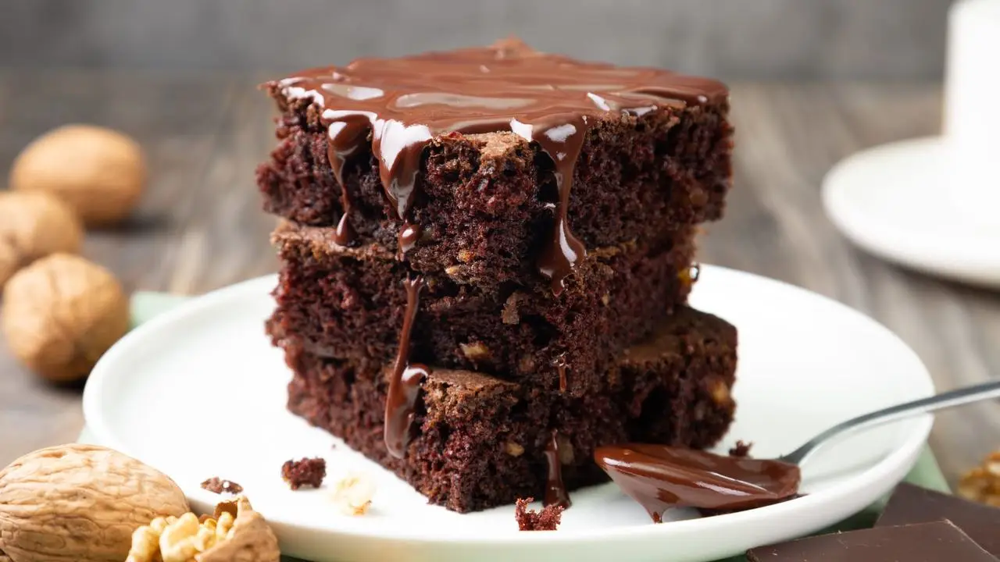

Receita Bolo de Chocolate
Uma receita delociosa e fácil de fazer! Veja os ingredientes e o passo a passo em baixo:
Ingredientes Bolo:
- 2 xícaras de farinha de trigo
- 1 xícara de açúcar
- 1 xícara de chocolate em pó
- 3 ovos
- 1/2 xícara de óleo
- 1 xícara de leite
- 1 colher de sopa de fermento em pó
Modo de preparo:
- Em uma tigela, misture a farinha, o açúcar e o chocolate em pó.
- Adicione os ovos, o óleo e o leite e misture bem.
- Acrescente o fermento e misture delicadamente.
- Despeje a massa em uma forma untada.
- Asse em forno preaquecido a 180°C por aproximadamente 40 minutos.
Cobertura
- 1 lata de leite condensado
- 1 colher de sopa de manteiga
- 3 colheres de sopa de chocolate em pó
- 1/2 caixa de creme de leite
Modo de Preparo da Cobertura
- Em uma panela, misture o leite condensado, a manteiga e o chocolate em pó.
- Cozinhe em fogo médio, mexendo sempre, até engrossar.
- Desligue o fogo e adicione o creme de leite, misturando bem.
- Espalhe sobre o bolo já assado.